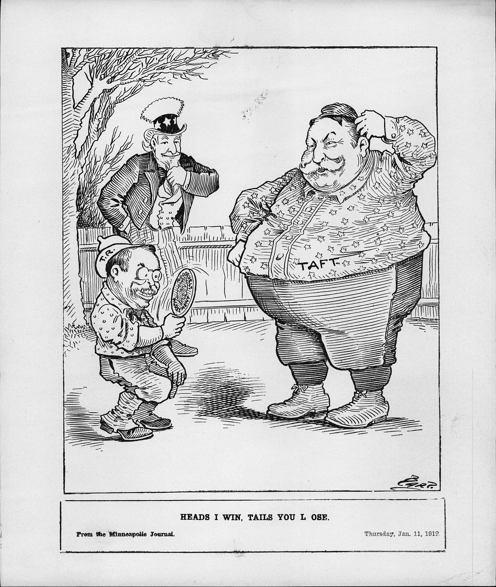
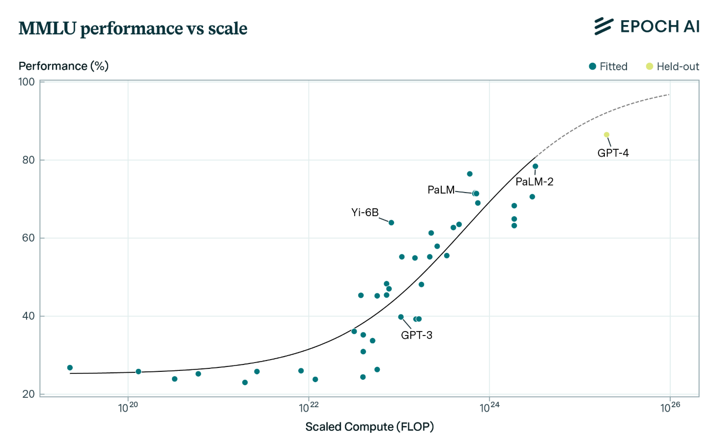

1931 · INCOMPLETENESSKurt GödelA system strong enough for arithmetic contains true statements it cannot prove.

1936 · HALTING PROBLEMAlan TuringNo algorithm can decide, for every program, whether it halts.
Nowadays, AI is considered to be a near-flawless calculator capable of solving any question. Yet, a simple probability question can highlight a surprising weakness. Consider the following problem:
Three coins are flipped. Each lands on heads with probability 1/3 and tails with probability 2/3. We are told that the total number of tails is even. What is the probability that all three coins land on heads?
At first glance, this seems like a simple puzzle yet, when I posed it to ChatGPT, Copilot and Gemini, each answered incorrectly. When we work through this problem and find the solution, we gain an insight into the weaknesses behind Artificial Intelligence.
Within the question posed, the key phrase is the “number of tails is always even”; it is not just a one-off condition, but a global constraint. This means that any outcome with 1 or 3 tails must have probability zero and is therefore excluded leaving only four possible outcomes: HHH, HTT, THT, TTH.
At the same time, each coin is supposed to have a marginal probability of 1/3 being heads. Therefore, for each coin, the total probability of the outcomes in which that coin is heads must be 1/3. Applied to the four outcomes (HHH, HTT, THT, TTH), this gives three linear constraints. Together with the requirement that their probabilities sum to one, these constraints force the probability of HHH to be zero.
The marginal probabilities suggest independence between the coins, while the even-tails condition introduces a dependence, creating a contradiction within the system. If we try to satisfy both conditions simultaneously, the probability of HHH cannot be anything other than zero. Therefore, flipping HHH is impossible if both constraints are to hold.
This suggests that the limitation lies not in the information available to the model, but in the mathematics behind how it produces answers. Problems like this form as a kind of “final mathematics exam” for Artificial Intelligence.
To understand where AI goes wrong, we need to understand the maths behind it. Large language models (LLMs) generate responses using probability, by predicting the likelihood of the next word given the previous context. This can be written as
meaning that at each step the model selects the most likely continuation. A complete response is therefore built as a sequence of these predictions. In probabilistic terms, the probability of a sequence \((x_1, x_2, \dots, x_n)\) can be expressed as
This factorisation expresses the joint probability of a sequence as a product of conditional probabilities, meaning the model evaluates likelihoods locally at each step rather than constructing a single global distribution.
Essentially, the model is using a form of local optimisation, selecting the most probable continuation at each stage though not ensuring it satisfies all the constraints. This helps explain why, in the coin problem, an AI may produce an answer that appears reasonable in isolation however still fails to satisfy all the conditions of the problem.
The coin puzzle is not the only place where local rules and global structure clash. Mathematics has been dealing with these same problems for a long time, and two classic results show why these contradictions matter.
In the early 1930s, Kurt Gödel, an Australian mathematician and philosopher, proved that any formal mathematical system strong enough to describe arithmetic will contain true statements that the system itself cannot prove. His idea was to encode statements as numbers and then construct a sentence, usually called G (presumably after himself), that effectively says “G is not provable”.
If the system proves G, then it has proved something false, because G claims it has no proof. If the system cannot prove G, then G is true but unprovable. Either way, the system is incomplete. Every step in Gödel’s construction is locally valid, yet the global picture forces a contradiction.
This is similar to what happens with AI models. They build answers one piece at a time, and each piece may look fine on its own. What they do not do is step back and check whether the entire argument fits together.
A few years later, Alan Turing proved the halting problem. He showed that there is no algorithm that can decide, for every possible computer program, whether that program will eventually halt or run forever.
His proof constructs a program D that behaves in the opposite way to what a hypothetical halting‑decider H predicts. If H(D,D) says “halts”, then D(D) loops forever. If H(D,D) says “loops”, then D(D) halts. The contradiction only appears when you consider the whole construction at once.
AI models often fall into the same pattern. They treat halting‑style questions as if they were ordinary computations, unaware that the question is undecidable in principle.
Similar issues appear in probability. You can specify marginal distributions such as \(P(X=1) = 1/2\) and \(P(Y=1) = 1/2\), then impose a global rule like “X=Y always". This forces \(P(X=1, Y=0) = 0\) and \(P(X=0, Y=1) = 0\). If you also require independence, then \(P(X=1,Y=1)=P(X=1)P(Y=1) =1/4\), which contradicts the global rule. The marginals and the constraint cannot both be true.
Modern contractionary prompts for AI work in a similar way. Each instruction looks harmless when viewed alone, but the combination leads to something impossible.
This is exactly the kind of reasoning that current AI systems struggle with.

Once you understand the structure behind the coin puzzle, it becomes surprisingly easy to build new questions that fool AI models. The idea is to create a probability space where the constraints cannot all hold at the same time, then ask the model to compute something inside that impossible world.
Suppose we have three events A, B and C with marginal probabilities \(P(A)=1/2\), \(P(B)=1/2\) and \(P(C)=1/2\). Nothing unusual so far. Now add a global rule saying that exactly one of the three events can occur. This forces \(P(A\cap B)=P(B\cap C)=P(A\cap C)=0\).
If we also require independence, then for example \(P(A\cap B)=P(A)P(B)=1/4\), which contradicts the global rule. A human usually notices this quickly. The marginals and the global constraint cannot both be true.
It is not that the model is being careless. It simply does not check whether the whole system makes sense before answering. It predicts the next likely sentence, and if the question is built on an impossible structure, the model walks straight into it.
So, how long until we can put our feet up and relax? Models keep getting bigger - and larger models usually perform better on many tasks. However, reasoning does not seem to improve at the same rate as pattern recognition.
Researchers at MIT describe this using scaling laws. A rough version says that the error rate behaves like \(\text{error}(N)\approx kN^{-\alpha}\), where N is the model size and α depends on the task. For image classification or translation, α is large, so accuracy improves quickly. For reasoning tasks, α is much smaller. If α=0.1, then reducing the error by a factor of ten requires
which is clearly unrealistic. This suggests that simply scaling up models will not fix global‑reasoning failures. The architecture itself, which predicts one token at a time, is part of the limitation.

New designs may help. These researchers are exploring models that run internal simulations, hybrids that combine neural networks with symbolic logic, and systems that use search rather than pure prediction. These approaches might handle contradictions more effectively.
Even so, some limits will remain. Gödel and Turing showed that certain problems are undecidable for any formal system. No amount of training data will allow a machine to resolve a contradiction that mathematics itself says cannot be resolved.
The future is likely to be mixed. AI will improve at many tasks, but the deeper issues, the ones involving global structure or impossible constraints, are not going away.
A small coin‑flip puzzle ends up revealing something surprisingly deep about how AI works. These models are excellent at producing fluent text and recognising patterns, but when a problem requires stepping back and checking whether everything fits together, they can miss the contradiction entirely.
Mathematics has known about this kind of limitation for a long time. Gödel showed that some true statements cannot be proven inside a system. Turing showed that some questions cannot be decided by any algorithm. Probability theory contains many examples where the local pieces do not form a consistent whole.
AI models inherit these limitations, not because they lack data, but because of the way they build answers, one small step at a time, without checking the whole picture. The future probably is not one where humans stop thinking. Instead, it is one where we understand more clearly what kinds of thinking humans are uniquely good at.
That difference, the ability to step back and see the bigger picture, might be what keeps us useful for many years to come.